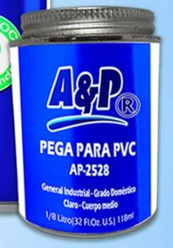

Cemento solvente · Marca A&P
Una tubería de presión es tan fuerte como su unión más débil. La Pega para PVC A&P AP-2528 fusiona tubería y accesorios en uniones que resisten presión, humedad y el paso del tiempo.

Cómo funciona
El cemento solvente no pega como un adhesivo común: fusiona químicamente la espiga y la campana hasta que se vuelven una sola pieza.
Cemento solvente de cuerpo medio, bajo VOC. Ablanda ambas superficies y las suelda químicamente, sin necesidad de calor.
Diseñado para fraguar incluso en ambientes húmedos, como los de la costa ecuatoriana. Rango de almacenamiento 5 °C – 44 °C.
Bien tapado y almacenado en su rango de temperatura, conserva sus propiedades hasta 3 años desde su fabricación.
Compatibilidad
La Pega A&P está formulada para unir tubería y accesorios PVC de presión hasta 200 mm de diámetro. Aplícala en ambas piezas a fusionar —campana y espiga— para un sello uniforme en todo el contorno.
Compatible con toda la línea de accesorios de presión PN10 y la tubería de presión E/C A&P.
| Presentación | Contenido | Uso recomendado |
|---|---|---|
| 1/8 litro | 125 ml | Riego de jardín, arreglos |
| 1/4 litro | 250 ml | Instalaciones domésticas |
| 1/2 litro | 500 ml | Obras medianas |
| 1 litro | 1.000 ml | Obra y ferretería |
| Galón | 4.000 ml | Uso industrial, diámetros grandes |
Agarre firme
El cuerpo medio da tiempo de maniobra sin gotear, para un agarre firme incluso en diámetros grandes y montajes verticales.
Al insertar, gira la pieza 1/4 de vuelta para repartir el cemento de forma pareja en todo el contorno.
Campana por dentro y espiga por fuera. Es el secreto de un sello sin fugas.
Espera antes de dar presión según el diámetro. La paciencia evita la fuga número uno.
Distribuidores y ferreterías
¿Ferretería o distribuidora? Trabaja la Pega A&P con precios de mayorista y despacho rápido. Una marca que tus clientes vuelven a pedir.